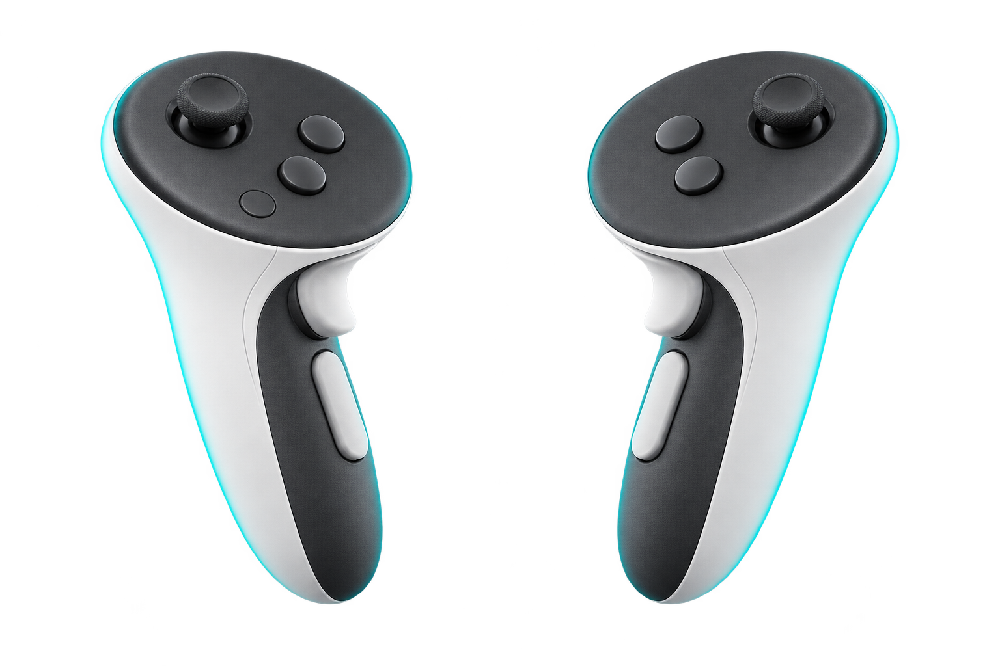

Have your headset software running before you start the game. The mod checks for it once at launch, and if it is not there yet it waits rather than forcing VR on.

Walkpush fully: sprintcomfort teleport: forward = teleportwheel: left / right = tier Task listY · closes popups · hold: inventory Pick up / put downX Pause menuMenu · hold and release: UI off Rotate nozzletrigger · refills detergent Highlight dirtgrip · hold: rotate what you carrywheel: previous Turnup: teleport target · down: nozzlehold R3: equipment wheelsR3 again: take CrouchB · hold: prone JumpA · confirms in menus and wheels Spraytrigger · confirms in menuswheel: picks Spray on / offgrip · no need to holdwheel: nextLeft controller moves you and works the menus. Right controller is the washer. The labels are the short version; the tables below are complete.
| Move the controller | The washer follows your hand in position and direction |
|---|---|
| Trigger | Spray, while held |
| Grip | Continuous spray on or off — no need to hold the trigger. While it is running, the grip switches it off instead of changing a tool, and opening the pause menu switches it off too, so a running jet can always be stopped. |
| A | Jump. With comfort teleport the jump is switched off — otherwise jump plus teleport would reach higher than intended |
| B tap | Crouch |
| B hold | Crouch, long press |
| Stick left / right | Turn. With the snap turn comfort option it turns in fixed steps |
| Stick up | Teleport target. Aim with the free hand, let the stick return to centre to commit. Always available, independent of the comfort options |
| Stick down | Next nozzle in the current category. It wants a deliberate flick, held for a moment — turning left or right no longer changes the nozzle by accident |
| R3 click | Switch nozzle category — standard or soap |
| R3 hold | Equipment wheels of the game — washer, nozzle, extension. Every washer tier you bought can be picked here. It stays open when you let go |
| Beam + trigger | Pick the segment or the tier under the beam. Aiming alone picks nothing |
|---|---|
| Left / right grip | Previous / next wheel — washer, nozzle, extension |
| R3 | Take the choice and close |
| Without the beam | Right stick picks, left stick left / right steps the tier, A takes |
| Adaptable nozzle | While spraying with it, stick up widens the jet, down narrows it (new, not yet tested) |
| Stick | Walk. With the teleport instead of walking comfort option, pushing the stick forward teleports instead |
|---|---|
| Stick pushed all the way | Sprint |
| Trigger | Open or close an animated interactable when your hand is on it — otherwise rotate the nozzle and refill detergent |
| Grip | Highlight remaining dirt |
| X | Pick up and put down objects, and work switches such as a lift's up and down. Point with the left hand: a green line appears as soon as something is within reach, and only then — no line means nothing is there. A switch that has to be held stays pressed while you hold X |
| Y tap | Task list. Inside a popup — journal, level summary, newspaper article, info message, the menu in your base — Y closes it instead, and on “Job complete” it continues like Esc. This is the stand-in for Esc: X opens, Y right above it closes |
| Y hold | Furniture inventory |
| Menu tap | Pause menu |
| Menu hold and release | Immersion Mode — the game UI off and on again. An open menu stays visible, so you cannot lock yourself out. Hold rather than double-click, because Virtual Desktop already uses the double-click |
| L3 click | Switch extension |
There are two, and they are independent. Both are aimed with the free hand — the stick says "go", the hand says "where".
| Target teleport | Washer-hand stick up. There for every player, with or without comfort options — for placing yourself somewhere deliberately |
|---|---|
| Comfort teleport | Off-hand stick forward, if the comfort option is on. It then replaces walking |
The arc flies like a thrown stone, and that is deliberate: there is an optimal angle for maximum distance, and you cannot overshoot it. The range is the measured sprinting jump — 7.74 m on level ground. Downwards there is no limit; upwards never higher than the jump. For greater heights use ladders, scissor lifts and stairs.
| Stairs and ledges | Walking, not jumping: if a walkable path leads up there, the target is allowed even above jump height. A wall stays a wall |
|---|---|
| Ladders | Teleporting onto a leaning ladder puts you at its top |
| In mid-air | No teleport while jumping or falling — only with solid ground under your feet again |
| Red instead of coloured | The target is refused: too high, no room, or no ground hit |
All off by default, set in the configuration tool. The target teleport above works independently and is always there.
| Teleport instead of walking | The off-hand stick teleports instead of walking. The jump on A is switched off then |
|---|---|
| Snap turn | Turning in fixed steps instead of smoothly. The angle is selectable: 15°, 30°, 45° or 60° |
| Vignette while moving | Darkens the edge of the image while you move. The strength is continuously adjustable |
| Preset | Off, Gentle (snap turn and vignette), Maximum (everything). Ticking a box by hand sets the preset to Custom |
Reach for a thing instead of looking for a button. The stick clicks keep working either way, so nothing is lost when a gesture does not land.
| Washer hand behind your right shoulder + right grip | Switch the washer brand |
|---|---|
| Washer hand at your right hip + right grip | Switch the nozzle category |
| Off hand at the washer + left grip | Switch the extension |
| Off hand on an animated interactable + left trigger | Open or close it — toilet lid, changing table, hatches |
The controller tells you what is happening, without you having to look.
| While spraying | Strength follows the nozzle: the 0° jet is strong, the 40° jet gentle |
|---|---|
| Turbo | A fast rattle instead of a steady hum |
| Soap | Softer and calmer |
| Hitting a surface | Full strength; spraying into the air is clearly quieter |
| Short pulses | Spray start and stop, nozzle change, washer and soap change |
| Gestures and grabbing | One pulse on the hand that acted |
On/off and the overall strength are in the configurator. The finer values —
per-nozzle strength, turbo rhythm, contact damping — are separate entries in
UserData\MelonPreferences.cfg.
That last one needs no aiming: reach for the thing, and on a low object the
hand really has to go down to it. With the hand on nothing, the same trigger
rotates the nozzle as it always did. Reach is InteractZoneRadius,
and InteractGrab = false switches it off.
The off-hand gesture stands down while you are carrying something, because the
left grip is the rotation modifier then. To switch the whole set off, set
GestureZones = false in UserData\MelonPreferences.cfg.
| Left grip held + left stick | Rotate the object. Walking is suspended while you hold the grip, so you turn the object instead of yourself |
|---|---|
| X | Put it down — but only where it fits. While the game shows the spot as blocked, X does nothing rather than leaving the object somewhere it cannot be picked up again. Turn a little, or step back, and it goes down |
Menu mode switches itself on and off. The mod follows the game's own signal, so as soon as a menu takes over, walking and turning stop and the sticks belong to the menu.
| Left stick | Move the selection, in all four directions |
|---|---|
| A or right trigger | Confirm |
| Menu | Back, or close what is open |
| Y | Close the popup or the task list — the stand-in for Esc |
| A in a dialog | Confirms the button the game itself pre-selected — the way out when the pointer finds nothing in a window |
| Left grip | Previous tab |
| Right grip | Next tab |
You should not need any of these in normal play. They are here for the times something does not come up on its own.
| F8 | Start VR by hand, if it did not start itself |
|---|---|
| F2 | Hand the washer to the controller, or give it back to mouse and keyboard |
| Keypad 3 | Recentre the washer and your seated position |
| Keypad + and . | Next or previous nozzle |
The grip alignment lives in the configurator — three sliders for position and three for rotation. You can also set it without taking the headset off: hold the left grip together with X and Y, move your washer hand to where the washer should sit, and let go.
There are more keys, but they are development tools and this build has them
switched off — F1, F6, F9 and the
Ctrl+keypad trim among them. To use them, set
DevMode = true and DevHotkeys = true in
UserData\MelonPreferences.cfg.
| The washer is not where my hand is | Adjust the grip in the configurator, or in game with Ctrl and the keypad |
|---|---|
| The left stick does not respond | F2 twice. It happens now and then when the right controller briefly goes to sleep |
| The menus are too big to read | Lower the menu size in the configurator. Alt with keypad 8 and 2 does the same while you play |
| An arm or a hand is visible | The game’s own arms and hands are hidden unconditionally, DLC
models included — recognised by where they hang rather than by
name. What you should see are the two VR hands, and those have their own
checkbox, “Show VR hands”. If any other geometry shows up,
send Latest.log |
| There is a green line coming out of the nozzle | That one is the aiming laser and can go: turn it off in the configurator. The short green line at the LEFT hand is a different thing and worth keeping — it only appears when something is within reach, and it ends on whatever X would take |
| The continuous jet will not switch off | Open the pause menu — that always clears it. If the grip does nothing at
all while your hand rests near your hip, move the hand away from your body
and press again, and please send Latest.log |
| Turning changes the nozzle by accident | It should not any more. If it still does, raise
NozzleStickDominance or
NozzleStickThreshold in
UserData\MelonPreferences.cfg, or set
NozzleStick = false to take the nozzle off the stick entirely —
R3 still reaches every category |
| Riding the lift looks stepped | Known, and not your headset. The platform moves the player in steps and the view follows them. It is being worked on; the ride itself is safe |
| VR will not come back after F6 | Restart the game. Shutting VR down releases the headset for good, and it cannot be brought back within the same session |
| VR did not start on its own | Start your headset software, then press F8. If that does
nothing either, the OpenXR files are missing from the installation —
the mod writes what it found to
MelonLoader\Latest.log |
| The controllers stopped working | F2 twice. The mod normally reconnects them by itself within a second |
The first launch after installing takes about half a minute with no sign of progress, and it needs an internet connection: MelonLoader generates its support files once. It has not crashed — let it finish.